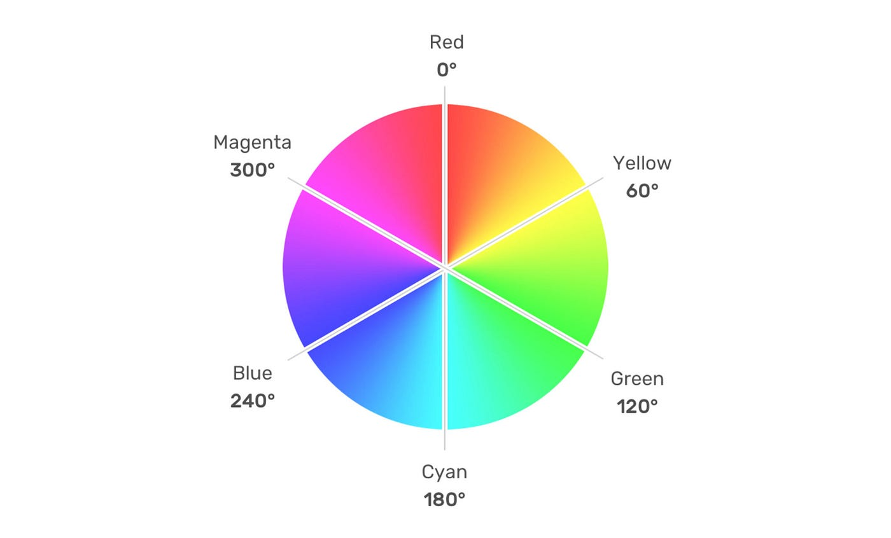
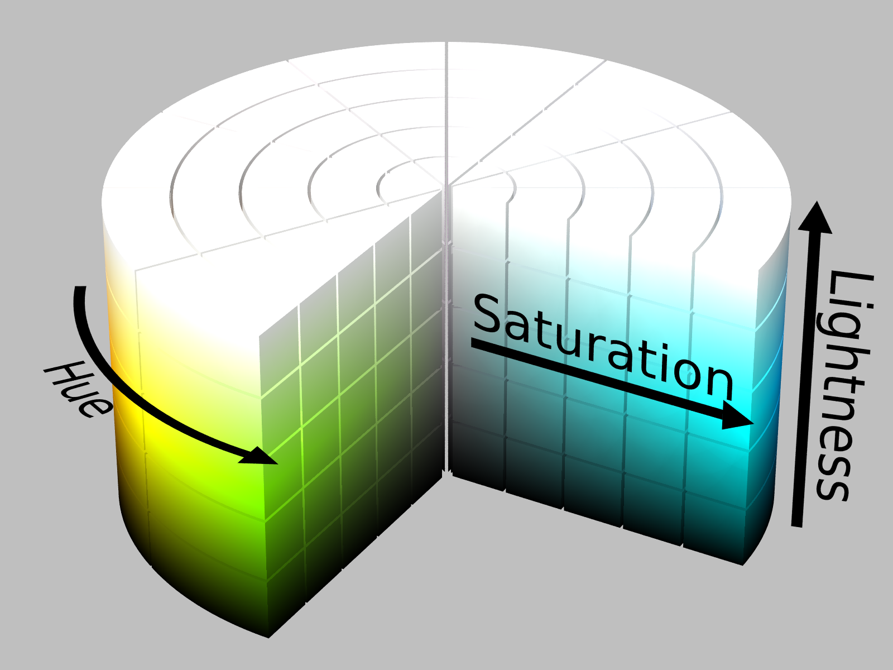

hsl)HSL significa:


Es un modelo de color más intuitivo que RGB, ya que permite manipular el tono, la viveza y la claridad del color de forma separada.
hsl(h s l)hsl(h, s, l)hsla(h s l / transparencia)hsla(h, s, l, transparencia)Representa el color básico en un círculo cromático de 360°:
| Hue (°) | Color |
|---|---|
| 0° | Rojo |
| 60° | Amarillo |
| 120° | Verde |
| 180° | Cian |
| 240° | Azul |
| 300° | Magenta |
| 360°/0° | Rojo otra vez |
Determina qué tan intenso o apagado es el color:
Determina qué tan claro u oscuro es el color:
|
Red |
Yellow |
Green |
Cyan |
Blue |
Magenta |
|
Rojo con 50% transparencia |
Verde con 50% transparencia |
Azul con 50% transparencia |